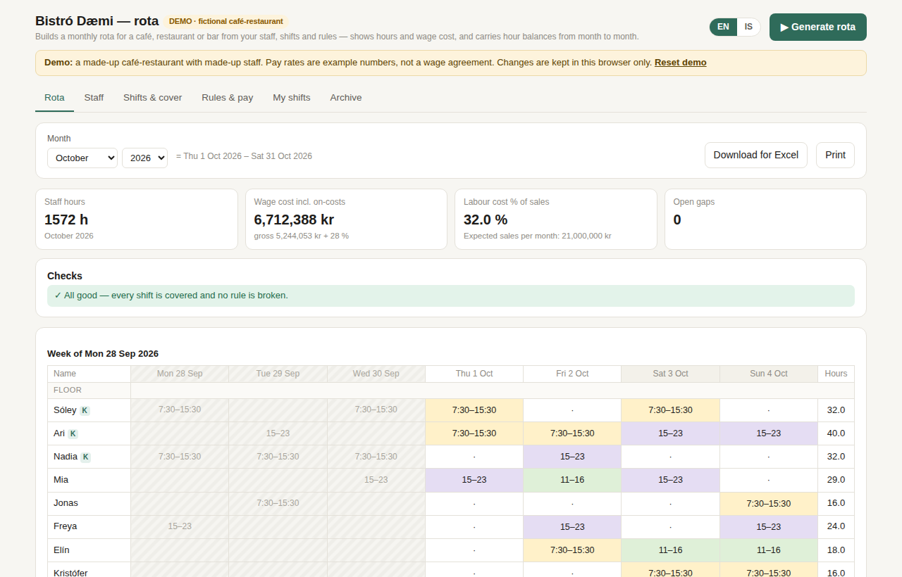
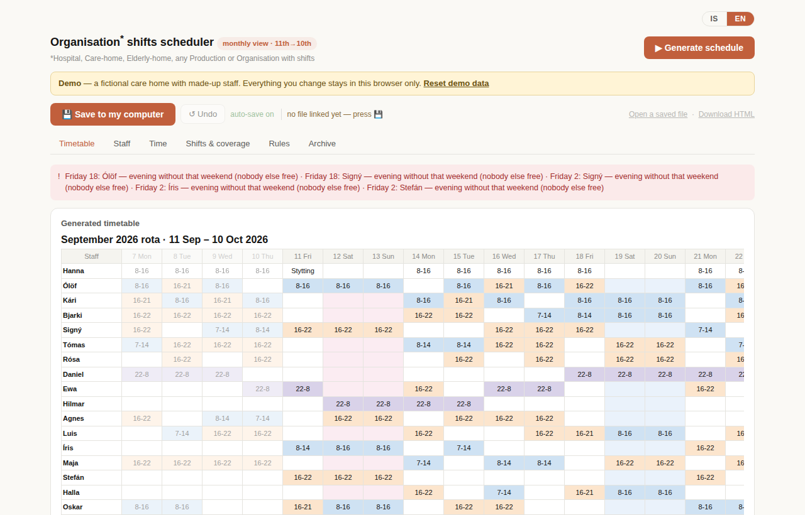

Rota generators that run in the browser. You describe your staff, the cover you need and your rules, and the tool builds the month, checks it, and shows each person's hours. No install and no account; each demo is a single HTML file.

Bistró Dæmi, a fictional café-restaurant with 14 staff.

A fictional care home with 20 staff and day, evening and night shifts.
All names, rates and figures in both demos are fictional. Pay rates are examples, not a wage agreement. Anything you change stays in your own browser. Built with AI assistance.